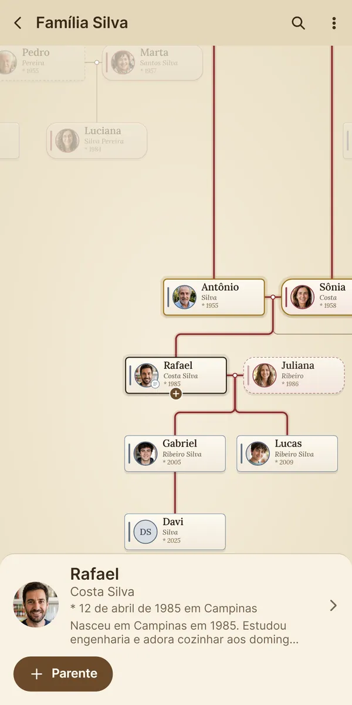
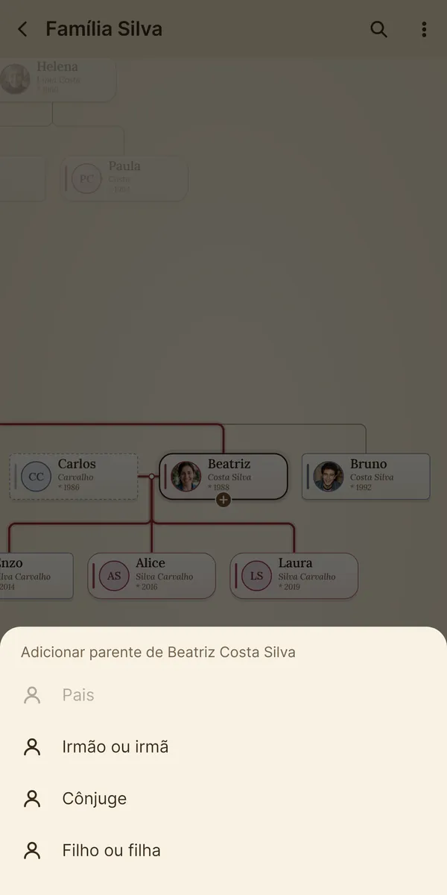
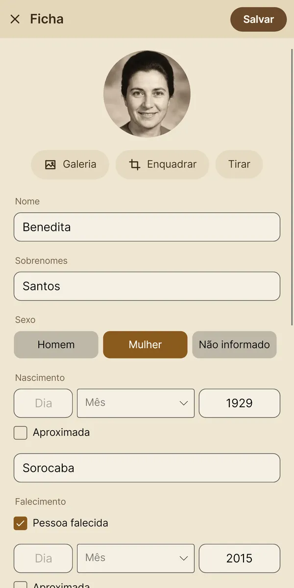
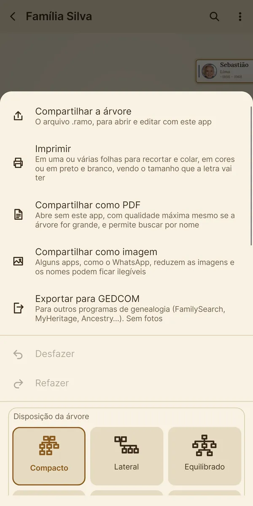
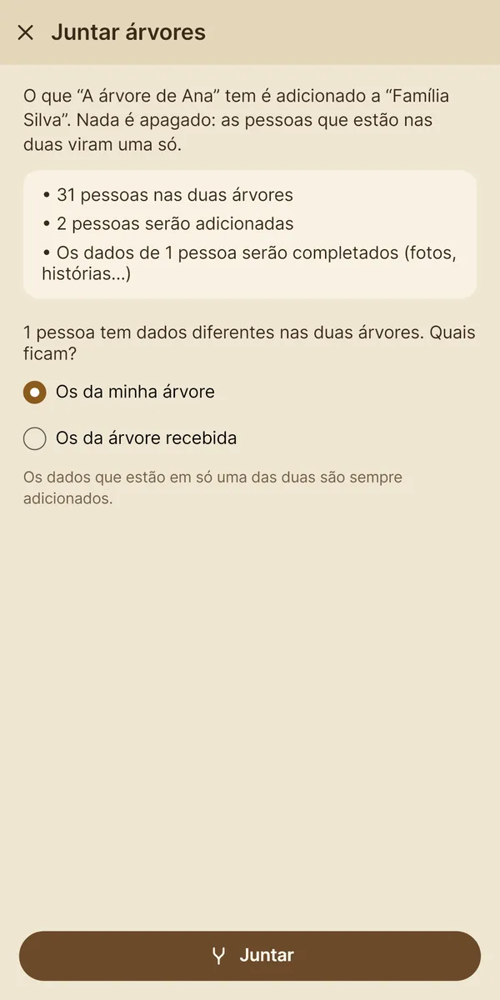
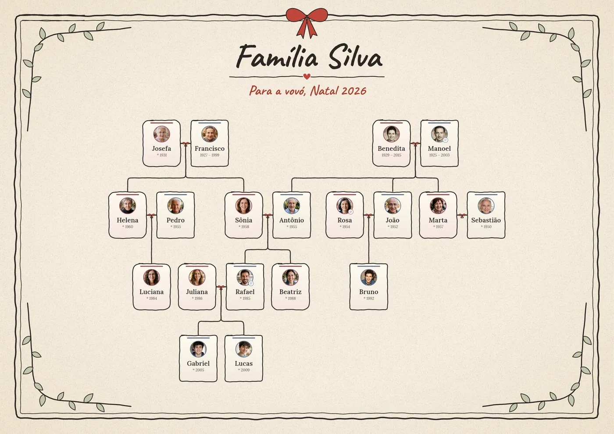
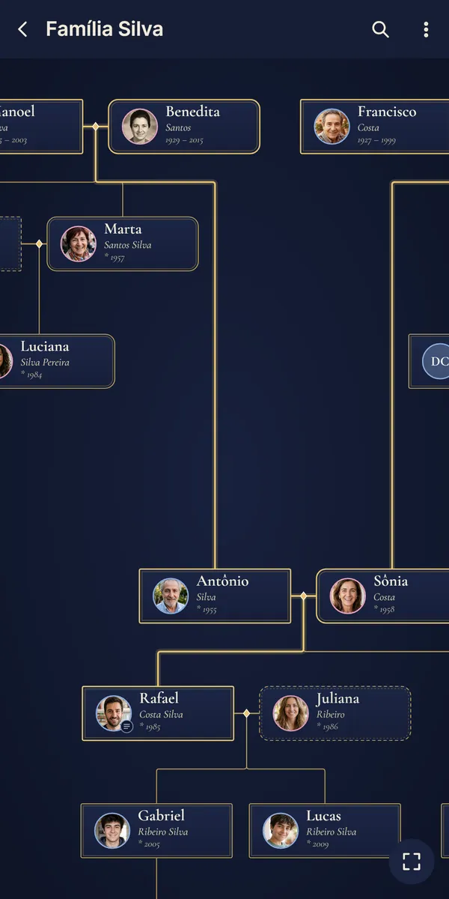
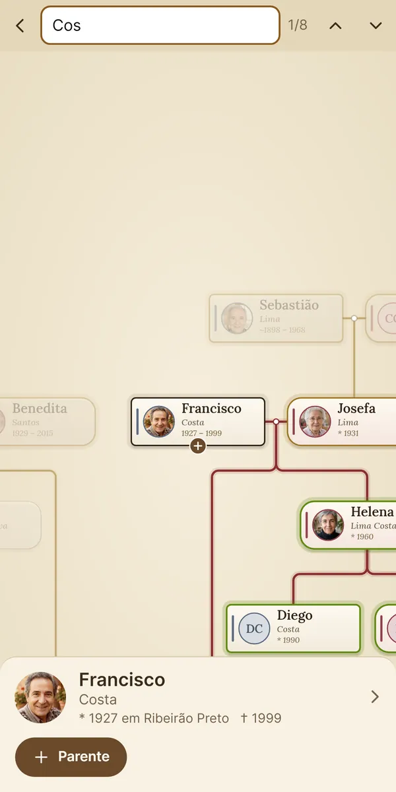
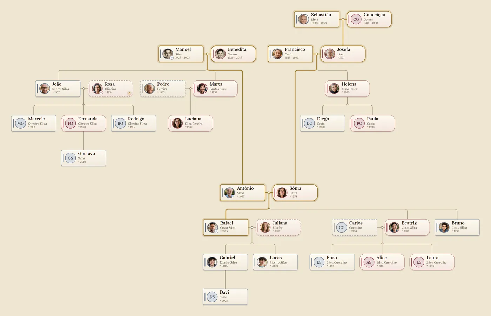

Árvore genealógica fácil
A árvore da sua família, fácil de fazer e de presentear
Crie a árvore genealógica da sua família no celular, compartilhe em PDF com todo mundo e imprima em tamanho grande para pendurar em casa ou dar de presente.
Grátis para começar · Sem conta nem anúncios · Sem assinatura


Fácil desde o primeiro minuto
Comece por você. Toque em um cartão e adicione os pais, o par, os filhos ou os irmãos: o Ramo organiza a árvore sozinho, mesmo quando a família cresce muito. Não precisa entender de genealogia nem ler manuais.
- Fotos da galeria ou da câmera, com datas aproximadas se você não souber as exatas.
- A história de cada pessoa: onde nasceu, o que fazia, as histórias de família.
- Encontre qualquer pessoa pelo nome e toque em alguém para ver destacados os seus antepassados e descendentes.


Compartilhe com toda a família
Mande a árvore em PDF por mensagem ou e-mail: ela chega inteira e nítida, e dá para ampliar para ler cada nome. Ou como imagem, ou no papel.
Ou mande a própria árvore: sua família abre com o Ramo, que é grátis, e pode ver e completar. Se cada um adicionar o seu ramo e vocês trocarem de novo, as árvores se juntam sozinhas, sem duplicar ninguém.


Imprima ou dê de presente
O Ramo distribui a árvore em uma ou várias folhas (A4, Carta, A3…) para recortar e colar, em cores ou em preto e branco, e mostra antes como vai ficar e o tamanho dos nomes.
Ou transforme a árvore em um quadro para presentear, com título, dedicatória e moldura, nos tamanhos de moldura mais comuns: 30×40, 40×50 e 50×70 cm. Um presente para os avós, para o Natal ou para um encontro de família.
Como imprimir a árvore em 50×70 cm · Ideias para presentear no Natal

Uma árvore clara e bonita, do seu jeito
- Dez estilos, como Álbum, Jardim, Papel e tinta ou Pergaminho, cada um com suas cores e sua fonte.
- Seis formas de organizar a árvore, inclusive da esquerda para a direita para famílias muito largas.
- O parentesco de cada um com a pessoa principal: primo de segundo grau, tio-avô, sobrinha-neta, sogra…
- Data e local do casamento de cada casal, e um aviso de manhã com os aniversários da família.
- Importa e exporta GEDCOM, o formato dos outros programas de genealogia.


Sem conta: tudo no seu celular
Sem cadastro e sem anúncios. Suas árvores ficam só no seu celular e funcionam sem internet: não são enviadas a nenhum servidor e ninguém mais vê os seus dados. Com o backup você guarda tudo em um arquivo.
Também no computador
O Ramo está disponível para Android no Google Play e para Windows na Microsoft Store. As árvores são arquivos .ramo que abrem do mesmo jeito nos dois: passe de um para o outro e continue de onde parou, na tela grande.

Grátis para começar, um único pagamento para ter tudo
Grátis
- Crie sua árvore, até 50 pessoas.
- Abra e edite as árvores que mandarem para você.
- Compartilhe em PDF ou imagem e imprima em folhas, com uma pequena marca “Feito com Ramo”.
- Sem anúncios.
Ramo completo
- Um único pagamento, sem assinatura.
- Árvores e pessoas sem limite.
- Quadros para presentear.
- Árvores vinculadas (a família do cônjuge na sua própria árvore).
- PDF, imagens e impressões sem a marca.
O Ramo completo é comprado dentro do app, no Google Play ou na Microsoft Store.